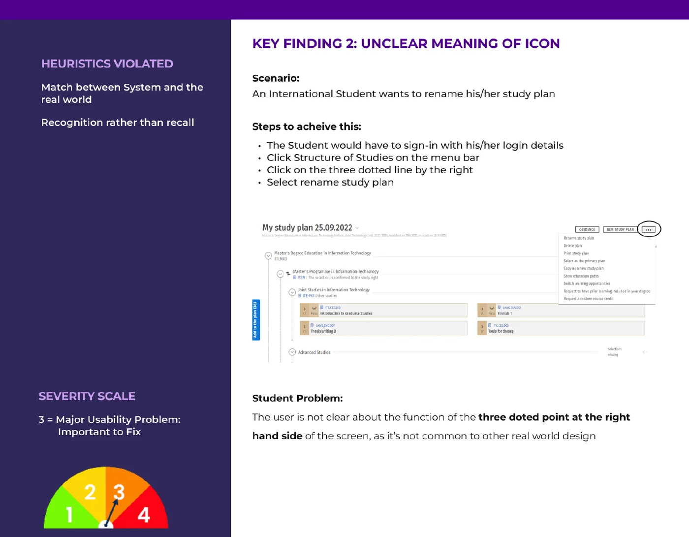
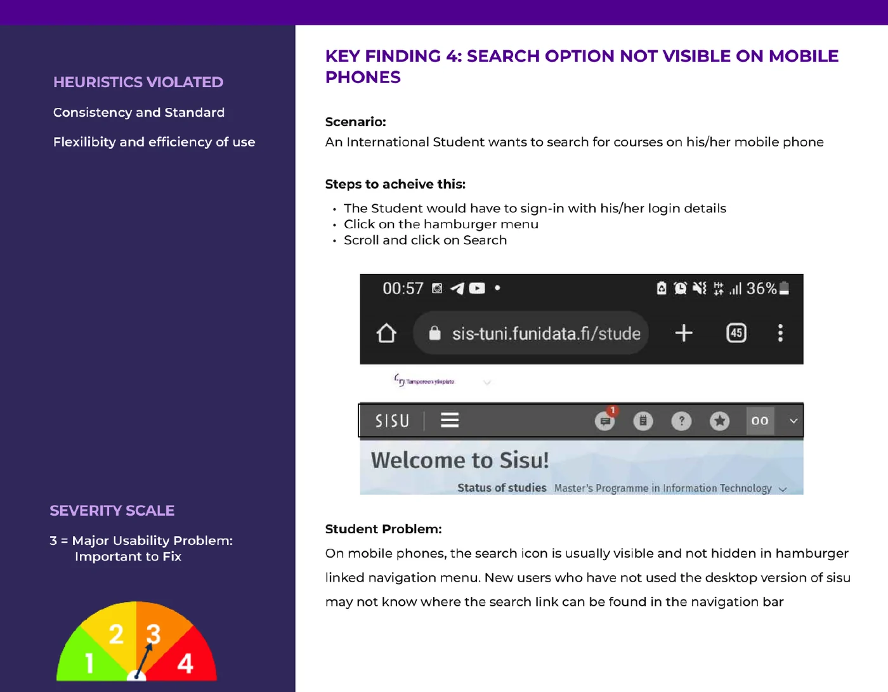
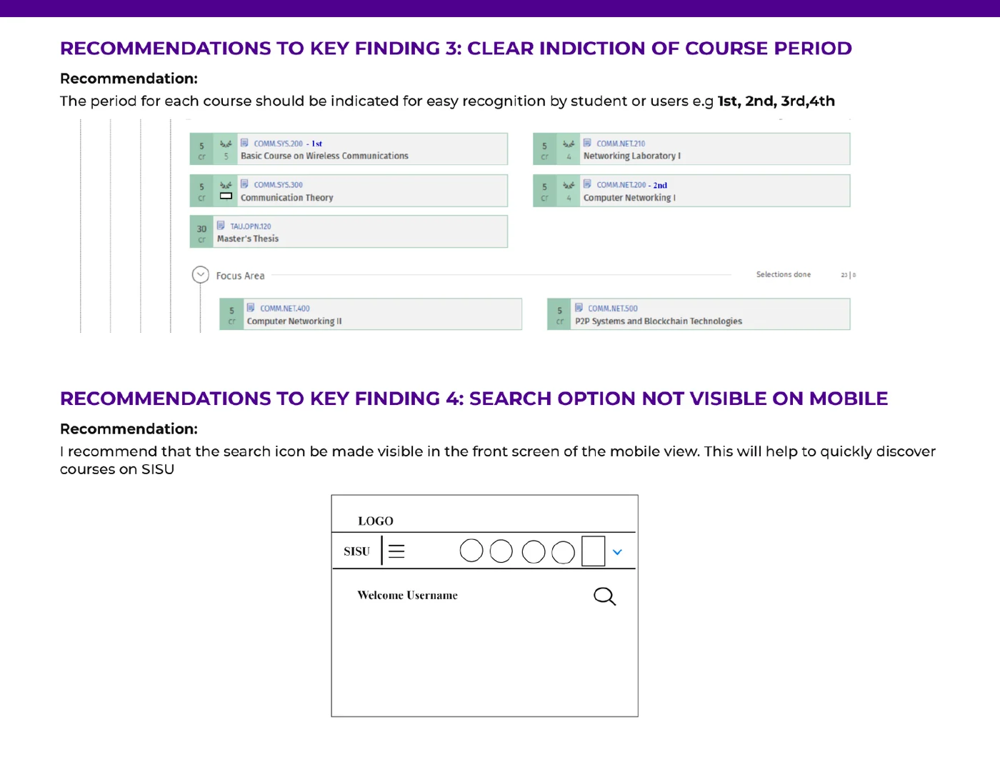
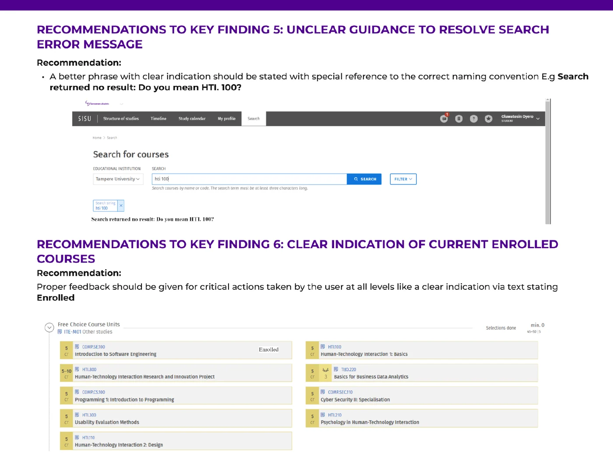
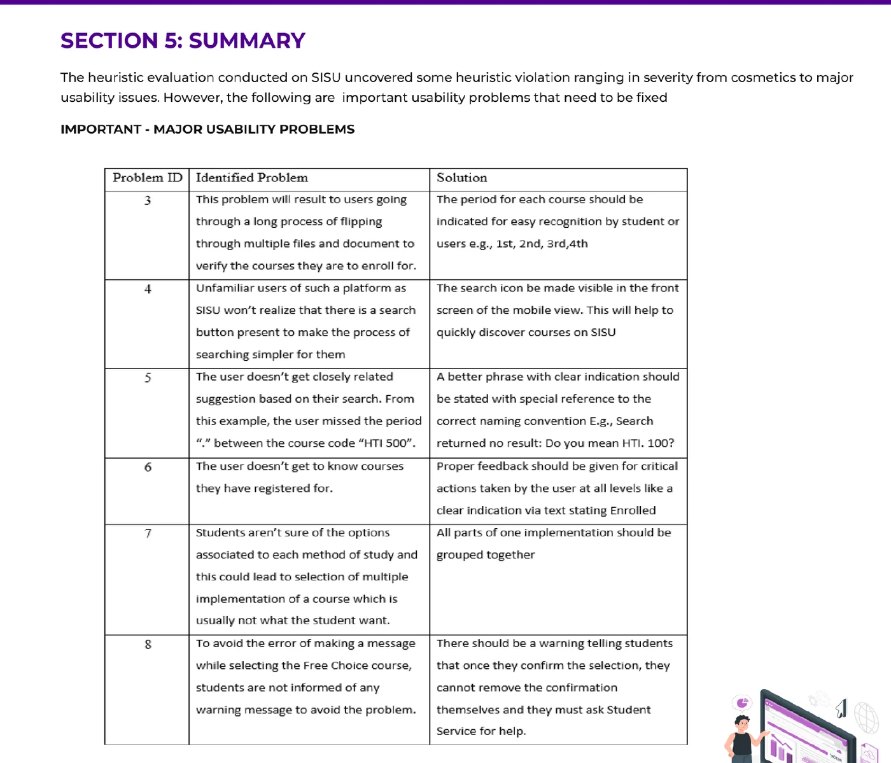

FIG. 06 — HEURISTIC EVALUATION
SISU: an expert review for students with no prior context.
We reviewed Tampere University’s study platform for students new to it. We found 15 problems, ranked them by severity and recommended a fix for each. A pair project for the course HTI.100, Human-Technology Interaction 1.
- Role
- UX Researcher, in a pair
- Timeframe
- 2 months (Sep–Oct 2022)
- Tools
- Figma, diagrams.net, MS Teams, Google Docs
- Users
- International students new to Finnish higher education
15 findings
3 evaluation frameworks
Severity-ranked
The context
Unfamiliarity is a usability risk in itself. SISU is where students plan their studies, so a confusing step costs them real time.
- UsersInternational students with no prior experience of a Finnish education platform
- GoalsCreate a study plan and timeline
- GoalsRegister for and search courses
- ContextPhones and laptops, at school, work or home
Student goals also included keeping personal information up to date and viewing completed credits.
Process
From scenarios to ranked fixes.
- ScopeDefined the users, their goals and where they use SISU.
- EvaluateWalked through real tasks step by step, noting the heuristics each problem broke.
- RankScored each problem on Nielsen’s severity scale, from 1 (cosmetic) to 4.
- RecommendSuggested a fix for each problem, with sketches in diagrams.net.See the findings →
- ReviewExchanged drafts with another group, and improved from their feedback.
Method
Three frameworks, one severity scale.
01Nielsen’s heuristics
The 10 usability heuristics as the main lens on the platform.
02Shneiderman’s Eight Golden Rules
A second lens on consistency, feedback and error prevention.
03USERFOCUS 44 guidelines
Task-oriented website guidelines, such as keeping a task to a reasonable number of clicks.
04Severity ranking
Every problem ranked on Nielsen’s scale, with a recommended fix.
Each finding follows the same pattern: a scenario, the steps to do it, a screenshot, the heuristics broken, a severity rating and the student problem.
Findings
Five of the fifteen, with the fix.
Ratings are Nielsen’s severity scale. The report singles out six major problems. Select a page to open it full size.

Finding 2 · Rated 3, major
An icon that hides the main actions.
Problem The three dots at the right of the study plan hide actions like renaming, deleting and printing. The icon is not common in everyday interfaces, so new users may not know what it does.
Recommendation Add the key actions to the menu with clear guidance, or add a submenu labelled “other options” to draw attention to it.
Why It breaks two heuristics: a match between the system and the real world, and recognition rather than recall.

Finding 4 · Rated 3, major
Search is hidden on a phone.
Problem On mobile, the search icon sits inside the hamburger menu. Students new to SISU may not know where to find it.
Recommendation Make the search icon visible on the front screen of the mobile view.
Why Users who have never used the desktop version could not discover course search quickly.

Findings 3 and 4 · Fixes
See the period at a glance.
Problem To know when a course is offered, a student had to leave the page and check the course list PDF, which is a long process for someone new.
Recommendation Show the period next to each course (1st, 2nd, 3rd or 4th), and show search on the mobile front screen (sketch).
Why The information is needed at the moment of choosing a course, so it should be there.

Findings 5 and 6 · Fixes
Helpful errors and clear status.
Problem A search for “HTI 500” returned nothing because the course code has a period (“HTI.500”), and nothing told the user. Students also could not tell which courses they had already registered for.
Recommendation Say what went wrong and suggest the right form (“Search returned no result: do you mean HTI.100?”), and label registered courses with the text “Enrolled”.
Why Error messages should help the user recover, and key actions need visible feedback.

The summary
The major problems at a glance.
Problem Fifteen findings of different weight were hard to act on all at once.
Recommendation A summary table pairs each major problem with its solution, so the team can see the six that matter most.
Why A ranked list helps a development team decide what to fix first.
My part
What I did in the review.
We worked as a pair and split the work evenly: scheduling, combining our drafts, sketching improvements, writing the sections and proof-reading. I wrote up eight of the fifteen findings (1 to 6, 14 and 15), my partner wrote five, and two came from the peer-review stage.
We found different problems, and some overlapped. One that both of us found was how hard it is to see which courses you are currently enrolled in, which suggests it is a real pain point.
Reflection
What I took from it.
A platform is never finished. Reviewing it and acting on user feedback keeps removing problems. From peer review I learned to present findings clearly, for example with bold headings, and to give constructive feedback.
Our recommendations are small design changes, so they should not create new problems in the existing workflow. They are not yet tested with students. Testing them with international students would be the next step. We gave permission for the findings to be shared anonymously with the SISU development team.